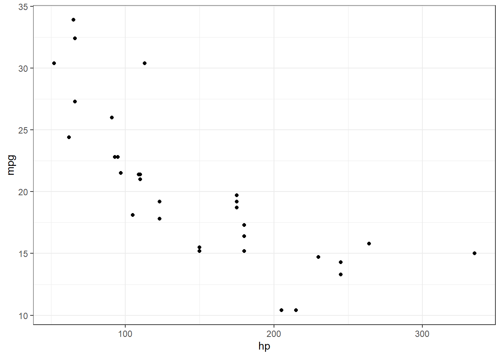
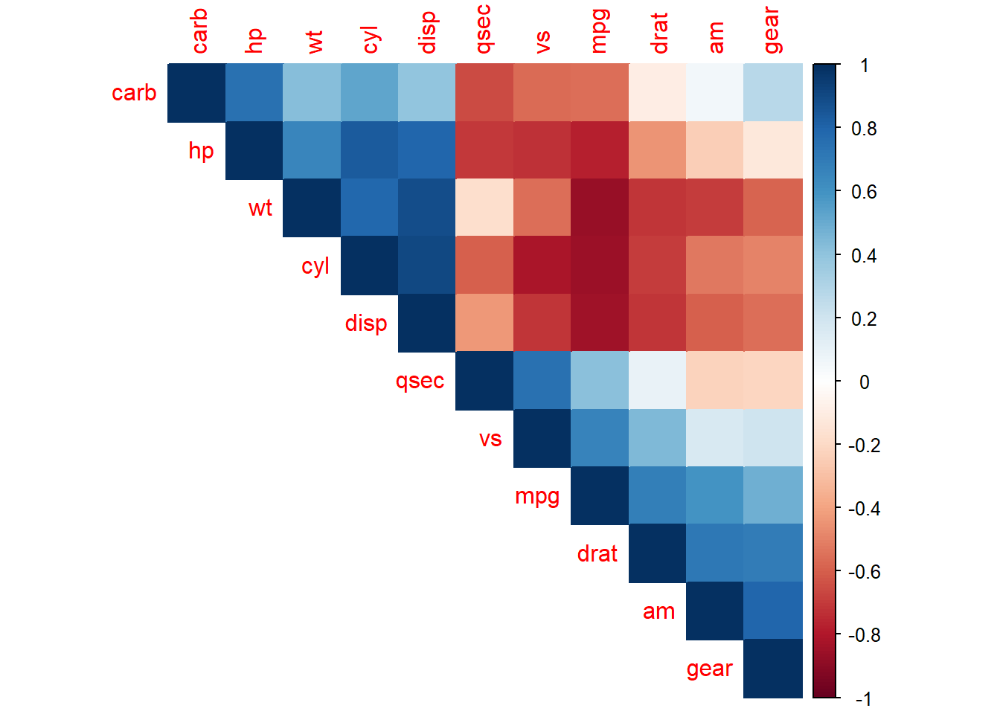
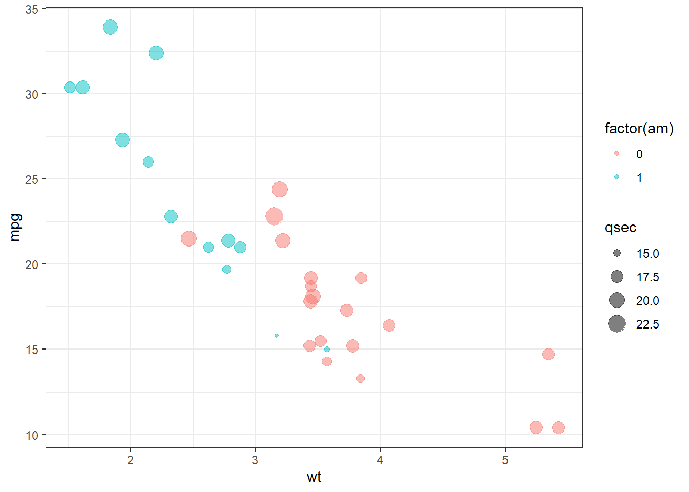
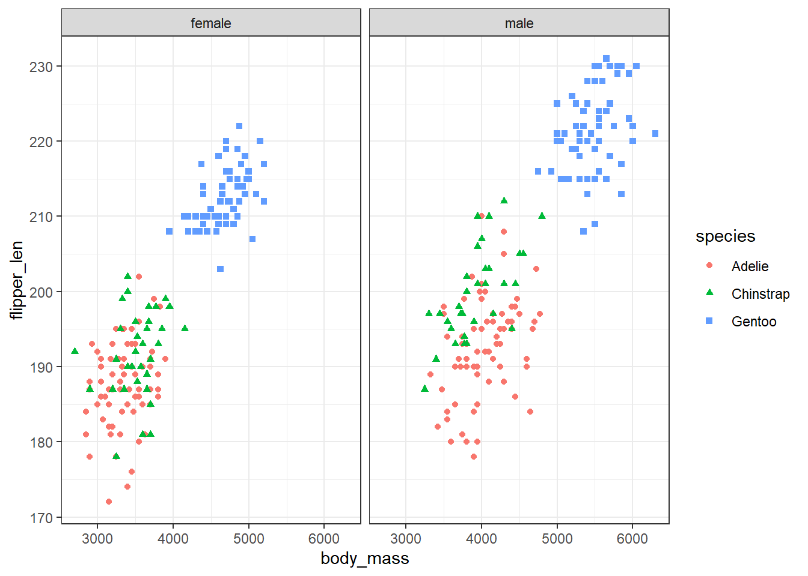
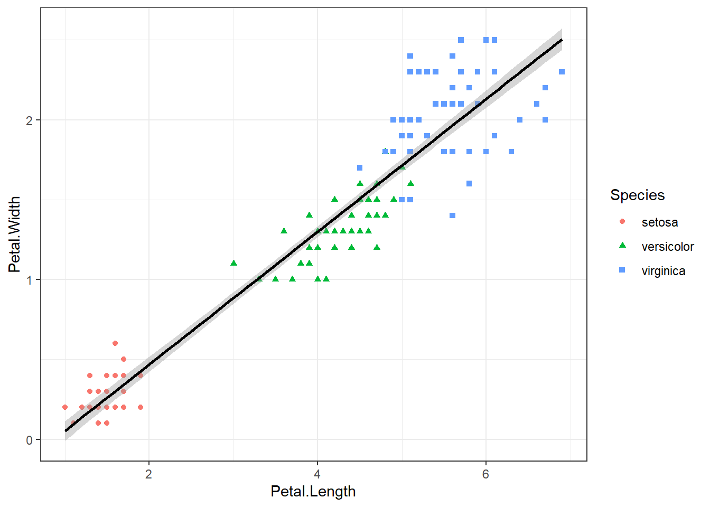
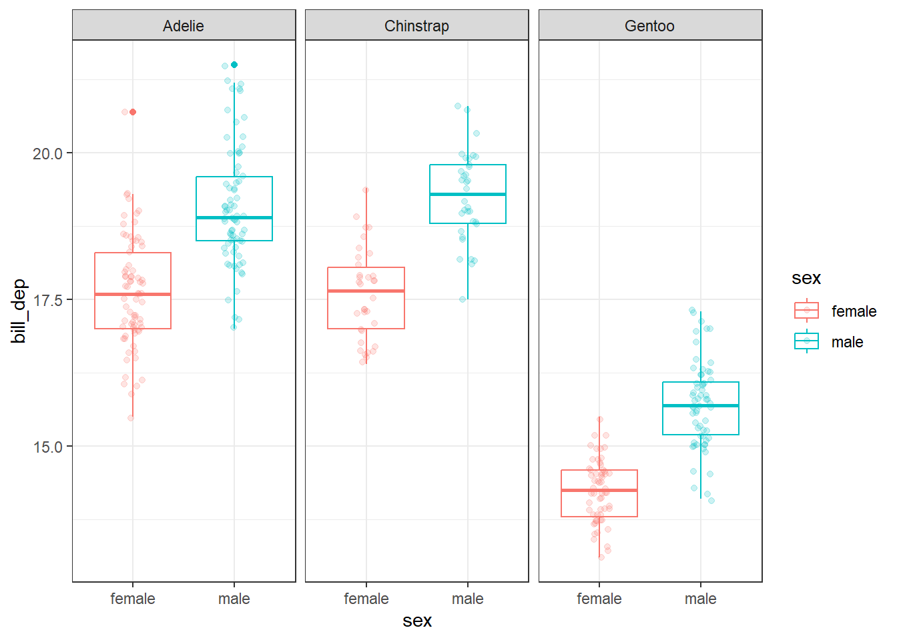
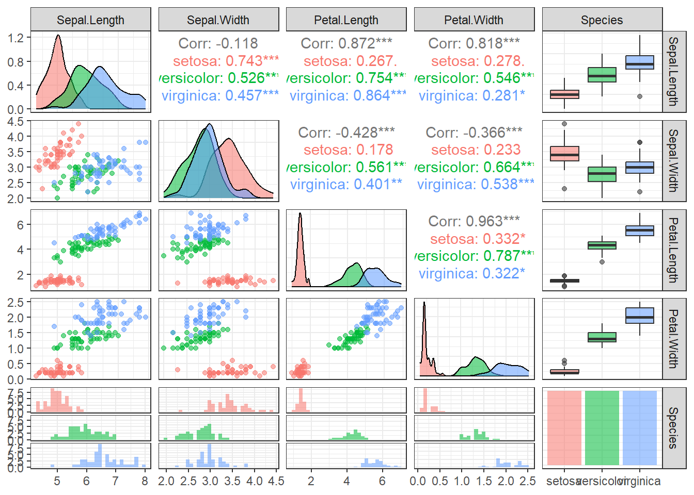
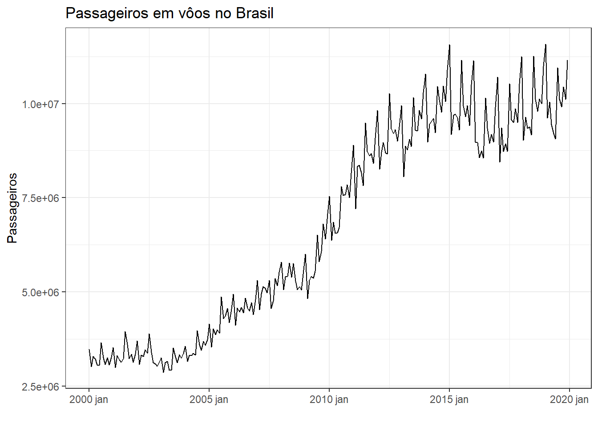
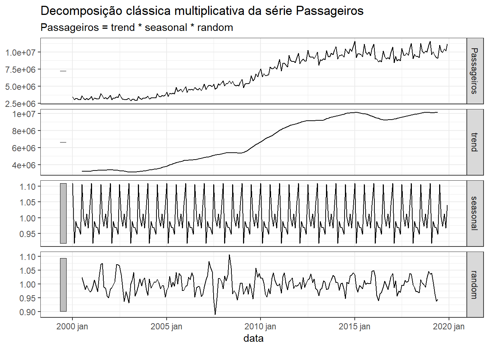

Perspectivas em ciências de dados na linguagem R
Análise exploratória de dados
Manipulação de dados e estatísticas descritivas
Instalando e carregando pacotes.
install_if_missing_multi <- function(packages) {
for (pkg in packages) {
if (!require(pkg, character.only = TRUE)) {
install.packages(pkg)
library(pkg, character.only = TRUE)
}
}
}
packages <- c("rstudioapi", "modelsummary", "glmnet", "xgboost", "ranger", "nnet", "dplyr", "ggplot2", "ggrepel", "corrplot", "GGally", "ggridges", "AER", "tidymodels", "finetune", "vip", "fpp3", "zoo", "rpart", "kernlab")
install_if_missing_multi(packages)Carregando pacotes necessários às análises (é o que faço se não quero usar a função anterior).
library(dplyr)
library(modelsummary)Carregando o conjunto de dados mtcars.
dados <- mtcars
# ?mtcars
head(dados) mpg cyl disp hp drat wt qsec vs am gear carb
Mazda RX4 21.0 6 160 110 3.90 2.620 16.46 0 1 4 4
Mazda RX4 Wag 21.0 6 160 110 3.90 2.875 17.02 0 1 4 4
Datsun 710 22.8 4 108 93 3.85 2.320 18.61 1 1 4 1
Hornet 4 Drive 21.4 6 258 110 3.08 3.215 19.44 1 0 3 1
Hornet Sportabout 18.7 8 360 175 3.15 3.440 17.02 0 0 3 2
Valiant 18.1 6 225 105 2.76 3.460 20.22 1 0 3 1# https://rstudio-pubs-static.s3.amazonaws.com/61800_faea93548c6b49cc91cd0c5ef5059894.htmlNúmero de dimensões do data frame (linhas e colunas).
dim(dados)[1] 32 11Acessando coluna de interesse.
hp <- dados$hp
hp [1] 110 110 93 110 175 105 245 62 95 123 123 180 180 180 205 215 230 66 52
[20] 65 97 150 150 245 175 66 91 113 264 175 335 109Indexando colunas.
dados[,4] [1] 110 110 93 110 175 105 245 62 95 123 123 180 180 180 205 215 230 66 52
[20] 65 97 150 150 245 175 66 91 113 264 175 335 109Indexando linhas.
porsche <- dados[27,]
porsche mpg cyl disp hp drat wt qsec vs am gear carb
Porsche 914-2 26 4 120.3 91 4.43 2.14 16.7 0 1 5 2Indexando linhas e colunas.
dados[27,4][1] 91dados_red <- dados[27:29, 4:5]
dados_red hp drat
Porsche 914-2 91 4.43
Lotus Europa 113 3.77
Ford Pantera L 264 4.22dados[c(27,29), 4:5] hp drat
Porsche 914-2 91 4.43
Ford Pantera L 264 4.22Repetindo operações anteriores via dplyr.
d_hp <- dados |>
select(hp)
d_hp hp
Mazda RX4 110
Mazda RX4 Wag 110
Datsun 710 93
Hornet 4 Drive 110
Hornet Sportabout 175
Valiant 105
Duster 360 245
Merc 240D 62
Merc 230 95
Merc 280 123
Merc 280C 123
Merc 450SE 180
Merc 450SL 180
Merc 450SLC 180
Cadillac Fleetwood 205
Lincoln Continental 215
Chrysler Imperial 230
Fiat 128 66
Honda Civic 52
Toyota Corolla 65
Toyota Corona 97
Dodge Challenger 150
AMC Javelin 150
Camaro Z28 245
Pontiac Firebird 175
Fiat X1-9 66
Porsche 914-2 91
Lotus Europa 113
Ford Pantera L 264
Ferrari Dino 175
Maserati Bora 335
Volvo 142E 109# dados |>
# pull(hp)dados |>
slice(27) mpg cyl disp hp drat wt qsec vs am gear carb
Porsche 914-2 26 4 120.3 91 4.43 2.14 16.7 0 1 5 2dados |>
select(hp) |>
slice(27) hp
Porsche 914-2 91dados |>
select(hp,drat) |>
slice(27:29) # slice(27,29) hp drat
Porsche 914-2 91 4.43
Lotus Europa 113 3.77
Ford Pantera L 264 4.22Vislumbrando os dados.
glimpse(dados)Rows: 32
Columns: 11
$ mpg <dbl> 21.0, 21.0, 22.8, 21.4, 18.7, 18.1, 14.3, 24.4, 22.8, 19.2, 17.8,…
$ cyl <dbl> 6, 6, 4, 6, 8, 6, 8, 4, 4, 6, 6, 8, 8, 8, 8, 8, 8, 4, 4, 4, 4, 8,…
$ disp <dbl> 160.0, 160.0, 108.0, 258.0, 360.0, 225.0, 360.0, 146.7, 140.8, 16…
$ hp <dbl> 110, 110, 93, 110, 175, 105, 245, 62, 95, 123, 123, 180, 180, 180…
$ drat <dbl> 3.90, 3.90, 3.85, 3.08, 3.15, 2.76, 3.21, 3.69, 3.92, 3.92, 3.92,…
$ wt <dbl> 2.620, 2.875, 2.320, 3.215, 3.440, 3.460, 3.570, 3.190, 3.150, 3.…
$ qsec <dbl> 16.46, 17.02, 18.61, 19.44, 17.02, 20.22, 15.84, 20.00, 22.90, 18…
$ vs <dbl> 0, 0, 1, 1, 0, 1, 0, 1, 1, 1, 1, 0, 0, 0, 0, 0, 0, 1, 1, 1, 1, 0,…
$ am <dbl> 1, 1, 1, 0, 0, 0, 0, 0, 0, 0, 0, 0, 0, 0, 0, 0, 0, 1, 1, 1, 0, 0,…
$ gear <dbl> 4, 4, 4, 3, 3, 3, 3, 4, 4, 4, 4, 3, 3, 3, 3, 3, 3, 4, 4, 4, 3, 3,…
$ carb <dbl> 4, 4, 1, 1, 2, 1, 4, 2, 2, 4, 4, 3, 3, 3, 4, 4, 4, 1, 2, 1, 1, 2,…Estatísticas descritivas.
datasummary_skim(dados)| Unique | Missing Pct. | Mean | SD | Min | Median | Max | Histogram | |
|---|---|---|---|---|---|---|---|---|
| mpg | 25 | 0 | 20.1 | 6.0 | 10.4 | 19.2 | 33.9 | |
| cyl | 3 | 0 | 6.2 | 1.8 | 4.0 | 6.0 | 8.0 | |
| disp | 27 | 0 | 230.7 | 123.9 | 71.1 | 196.3 | 472.0 | |
| hp | 22 | 0 | 146.7 | 68.6 | 52.0 | 123.0 | 335.0 | |
| drat | 22 | 0 | 3.6 | 0.5 | 2.8 | 3.7 | 4.9 | |
| wt | 29 | 0 | 3.2 | 1.0 | 1.5 | 3.3 | 5.4 | |
| qsec | 30 | 0 | 17.8 | 1.8 | 14.5 | 17.7 | 22.9 | |
| vs | 2 | 0 | 0.4 | 0.5 | 0.0 | 0.0 | 1.0 | |
| am | 2 | 0 | 0.4 | 0.5 | 0.0 | 0.0 | 1.0 | |
| gear | 3 | 0 | 3.7 | 0.7 | 3.0 | 4.0 | 5.0 | |
| carb | 6 | 0 | 2.8 | 1.6 | 1.0 | 2.0 | 8.0 |
# summary(dados)Conjunto de dados penguins.
glimpse(penguins)Rows: 344
Columns: 7
$ species <fct> Adelie, Adelie, Adelie, Adelie, Adelie, Adelie, Adel…
$ island <fct> Torgersen, Torgersen, Torgersen, Torgersen, Torgerse…
$ bill_length_mm <dbl> 39.1, 39.5, 40.3, NA, 36.7, 39.3, 38.9, 39.2, 34.1, …
$ bill_depth_mm <dbl> 18.7, 17.4, 18.0, NA, 19.3, 20.6, 17.8, 19.6, 18.1, …
$ flipper_length_mm <int> 181, 186, 195, NA, 193, 190, 181, 195, 193, 190, 186…
$ body_mass_g <int> 3750, 3800, 3250, NA, 3450, 3650, 3625, 4675, 3475, …
$ sex <fct> male, female, female, NA, female, male, female, male…Resumo das variáveis numéricas com datasummary_skim.
datasummary_skim(penguins,
type = "numeric")| Unique | Missing Pct. | Mean | SD | Min | Median | Max | Histogram | |
|---|---|---|---|---|---|---|---|---|
| bill_length_mm | 165 | 1 | 43.9 | 5.5 | 32.1 | 44.5 | 59.6 |  |
| bill_depth_mm | 81 | 1 | 17.2 | 2.0 | 13.1 | 17.3 | 21.5 |  |
| flipper_length_mm | 56 | 1 | 200.9 | 14.1 | 172.0 | 197.0 | 231.0 |  |
| body_mass_g | 95 | 1 | 4201.8 | 802.0 | 2700.0 | 4050.0 | 6300.0 |  |
Caso queira avaliar apenas as variáveis categóricas.
datasummary_skim(penguins,
type = "categorical")| N | % | ||
|---|---|---|---|
| species | Adelie | 152 | 44.2 |
| Chinstrap | 68 | 19.8 | |
| Gentoo | 124 | 36.0 | |
| island | Biscoe | 168 | 48.8 |
| Dream | 124 | 36.0 | |
| Torgersen | 52 | 15.1 | |
| sex | female | 165 | 48.0 |
| male | 168 | 48.8 |
Voltando aos carros. Avaliando a correlação entre as variáveis.
cor(dados) |>
round(2) mpg cyl disp hp drat wt qsec vs am gear carb
mpg 1.00 -0.85 -0.85 -0.78 0.68 -0.87 0.42 0.66 0.60 0.48 -0.55
cyl -0.85 1.00 0.90 0.83 -0.70 0.78 -0.59 -0.81 -0.52 -0.49 0.53
disp -0.85 0.90 1.00 0.79 -0.71 0.89 -0.43 -0.71 -0.59 -0.56 0.39
hp -0.78 0.83 0.79 1.00 -0.45 0.66 -0.71 -0.72 -0.24 -0.13 0.75
drat 0.68 -0.70 -0.71 -0.45 1.00 -0.71 0.09 0.44 0.71 0.70 -0.09
wt -0.87 0.78 0.89 0.66 -0.71 1.00 -0.17 -0.55 -0.69 -0.58 0.43
qsec 0.42 -0.59 -0.43 -0.71 0.09 -0.17 1.00 0.74 -0.23 -0.21 -0.66
vs 0.66 -0.81 -0.71 -0.72 0.44 -0.55 0.74 1.00 0.17 0.21 -0.57
am 0.60 -0.52 -0.59 -0.24 0.71 -0.69 -0.23 0.17 1.00 0.79 0.06
gear 0.48 -0.49 -0.56 -0.13 0.70 -0.58 -0.21 0.21 0.79 1.00 0.27
carb -0.55 0.53 0.39 0.75 -0.09 0.43 -0.66 -0.57 0.06 0.27 1.00cor(dados,
method = "spearman") |>
round(2) mpg cyl disp hp drat wt qsec vs am gear carb
mpg 1.00 -0.91 -0.91 -0.89 0.65 -0.89 0.47 0.71 0.56 0.54 -0.66
cyl -0.91 1.00 0.93 0.90 -0.68 0.86 -0.57 -0.81 -0.52 -0.56 0.58
disp -0.91 0.93 1.00 0.85 -0.68 0.90 -0.46 -0.72 -0.62 -0.59 0.54
hp -0.89 0.90 0.85 1.00 -0.52 0.77 -0.67 -0.75 -0.36 -0.33 0.73
drat 0.65 -0.68 -0.68 -0.52 1.00 -0.75 0.09 0.45 0.69 0.74 -0.13
wt -0.89 0.86 0.90 0.77 -0.75 1.00 -0.23 -0.59 -0.74 -0.68 0.50
qsec 0.47 -0.57 -0.46 -0.67 0.09 -0.23 1.00 0.79 -0.20 -0.15 -0.66
vs 0.71 -0.81 -0.72 -0.75 0.45 -0.59 0.79 1.00 0.17 0.28 -0.63
am 0.56 -0.52 -0.62 -0.36 0.69 -0.74 -0.20 0.17 1.00 0.81 -0.06
gear 0.54 -0.56 -0.59 -0.33 0.74 -0.68 -0.15 0.28 0.81 1.00 0.11
carb -0.66 0.58 0.54 0.73 -0.13 0.50 -0.66 -0.63 -0.06 0.11 1.00datasummary_correlation(dados)| mpg | cyl | disp | hp | drat | wt | qsec | vs | am | gear | carb | |
|---|---|---|---|---|---|---|---|---|---|---|---|
| mpg | 1 | . | . | . | . | . | . | . | . | . | . |
| cyl | -.85 | 1 | . | . | . | . | . | . | . | . | . |
| disp | -.85 | .90 | 1 | . | . | . | . | . | . | . | . |
| hp | -.78 | .83 | .79 | 1 | . | . | . | . | . | . | . |
| drat | .68 | -.70 | -.71 | -.45 | 1 | . | . | . | . | . | . |
| wt | -.87 | .78 | .89 | .66 | -.71 | 1 | . | . | . | . | . |
| qsec | .42 | -.59 | -.43 | -.71 | .09 | -.17 | 1 | . | . | . | . |
| vs | .66 | -.81 | -.71 | -.72 | .44 | -.55 | .74 | 1 | . | . | . |
| am | .60 | -.52 | -.59 | -.24 | .71 | -.69 | -.23 | .17 | 1 | . | . |
| gear | .48 | -.49 | -.56 | -.13 | .70 | -.58 | -.21 | .21 | .79 | 1 | . |
| carb | -.55 | .53 | .39 | .75 | -.09 | .43 | -.66 | -.57 | .06 | .27 | 1 |
Correlação para o conjunto de dados penguins.
# cor(penguins) # dá erro devido as variáveis categóricas
penguins |>
select(where(is.numeric)) |>
cor(use="pairwise.complete.obs") bill_length_mm bill_depth_mm flipper_length_mm body_mass_g
bill_length_mm 1.0000000 -0.2350529 0.6561813 0.5951098
bill_depth_mm -0.2350529 1.0000000 -0.5838512 -0.4719156
flipper_length_mm 0.6561813 -0.5838512 1.0000000 0.8712018
body_mass_g 0.5951098 -0.4719156 0.8712018 1.0000000Conjunto de dados iris.
glimpse(iris)Rows: 150
Columns: 5
$ Sepal.Length <dbl> 5.1, 4.9, 4.7, 4.6, 5.0, 5.4, 4.6, 5.0, 4.4, 4.9, 5.4, 4.…
$ Sepal.Width <dbl> 3.5, 3.0, 3.2, 3.1, 3.6, 3.9, 3.4, 3.4, 2.9, 3.1, 3.7, 3.…
$ Petal.Length <dbl> 1.4, 1.4, 1.3, 1.5, 1.4, 1.7, 1.4, 1.5, 1.4, 1.5, 1.5, 1.…
$ Petal.Width <dbl> 0.2, 0.2, 0.2, 0.2, 0.2, 0.4, 0.3, 0.2, 0.2, 0.1, 0.2, 0.…
$ Species <fct> setosa, setosa, setosa, setosa, setosa, setosa, setosa, s…levels(iris$Species)[1] "setosa" "versicolor" "virginica" Seleção de variáveis de forma inteligente.
sepal <- iris |>
select(starts_with("Sepal"))
sepal Sepal.Length Sepal.Width
1 5.1 3.5
2 4.9 3.0
3 4.7 3.2
4 4.6 3.1
5 5.0 3.6
6 5.4 3.9
7 4.6 3.4
8 5.0 3.4
9 4.4 2.9
10 4.9 3.1
11 5.4 3.7
12 4.8 3.4
13 4.8 3.0
14 4.3 3.0
15 5.8 4.0
16 5.7 4.4
17 5.4 3.9
18 5.1 3.5
19 5.7 3.8
20 5.1 3.8
21 5.4 3.4
22 5.1 3.7
23 4.6 3.6
24 5.1 3.3
25 4.8 3.4
26 5.0 3.0
27 5.0 3.4
28 5.2 3.5
29 5.2 3.4
30 4.7 3.2
31 4.8 3.1
32 5.4 3.4
33 5.2 4.1
34 5.5 4.2
35 4.9 3.1
36 5.0 3.2
37 5.5 3.5
38 4.9 3.6
39 4.4 3.0
40 5.1 3.4
41 5.0 3.5
42 4.5 2.3
43 4.4 3.2
44 5.0 3.5
45 5.1 3.8
46 4.8 3.0
47 5.1 3.8
48 4.6 3.2
49 5.3 3.7
50 5.0 3.3
51 7.0 3.2
52 6.4 3.2
53 6.9 3.1
54 5.5 2.3
55 6.5 2.8
56 5.7 2.8
57 6.3 3.3
58 4.9 2.4
59 6.6 2.9
60 5.2 2.7
61 5.0 2.0
62 5.9 3.0
63 6.0 2.2
64 6.1 2.9
65 5.6 2.9
66 6.7 3.1
67 5.6 3.0
68 5.8 2.7
69 6.2 2.2
70 5.6 2.5
71 5.9 3.2
72 6.1 2.8
73 6.3 2.5
74 6.1 2.8
75 6.4 2.9
76 6.6 3.0
77 6.8 2.8
78 6.7 3.0
79 6.0 2.9
80 5.7 2.6
81 5.5 2.4
82 5.5 2.4
83 5.8 2.7
84 6.0 2.7
85 5.4 3.0
86 6.0 3.4
87 6.7 3.1
88 6.3 2.3
89 5.6 3.0
90 5.5 2.5
91 5.5 2.6
92 6.1 3.0
93 5.8 2.6
94 5.0 2.3
95 5.6 2.7
96 5.7 3.0
97 5.7 2.9
98 6.2 2.9
99 5.1 2.5
100 5.7 2.8
101 6.3 3.3
102 5.8 2.7
103 7.1 3.0
104 6.3 2.9
105 6.5 3.0
106 7.6 3.0
107 4.9 2.5
108 7.3 2.9
109 6.7 2.5
110 7.2 3.6
111 6.5 3.2
112 6.4 2.7
113 6.8 3.0
114 5.7 2.5
115 5.8 2.8
116 6.4 3.2
117 6.5 3.0
118 7.7 3.8
119 7.7 2.6
120 6.0 2.2
121 6.9 3.2
122 5.6 2.8
123 7.7 2.8
124 6.3 2.7
125 6.7 3.3
126 7.2 3.2
127 6.2 2.8
128 6.1 3.0
129 6.4 2.8
130 7.2 3.0
131 7.4 2.8
132 7.9 3.8
133 6.4 2.8
134 6.3 2.8
135 6.1 2.6
136 7.7 3.0
137 6.3 3.4
138 6.4 3.1
139 6.0 3.0
140 6.9 3.1
141 6.7 3.1
142 6.9 3.1
143 5.8 2.7
144 6.8 3.2
145 6.7 3.3
146 6.7 3.0
147 6.3 2.5
148 6.5 3.0
149 6.2 3.4
150 5.9 3.0Excluindo coluna.
iris |>
select(!Species) Sepal.Length Sepal.Width Petal.Length Petal.Width
1 5.1 3.5 1.4 0.2
2 4.9 3.0 1.4 0.2
3 4.7 3.2 1.3 0.2
4 4.6 3.1 1.5 0.2
5 5.0 3.6 1.4 0.2
6 5.4 3.9 1.7 0.4
7 4.6 3.4 1.4 0.3
8 5.0 3.4 1.5 0.2
9 4.4 2.9 1.4 0.2
10 4.9 3.1 1.5 0.1
11 5.4 3.7 1.5 0.2
12 4.8 3.4 1.6 0.2
13 4.8 3.0 1.4 0.1
14 4.3 3.0 1.1 0.1
15 5.8 4.0 1.2 0.2
16 5.7 4.4 1.5 0.4
17 5.4 3.9 1.3 0.4
18 5.1 3.5 1.4 0.3
19 5.7 3.8 1.7 0.3
20 5.1 3.8 1.5 0.3
21 5.4 3.4 1.7 0.2
22 5.1 3.7 1.5 0.4
23 4.6 3.6 1.0 0.2
24 5.1 3.3 1.7 0.5
25 4.8 3.4 1.9 0.2
26 5.0 3.0 1.6 0.2
27 5.0 3.4 1.6 0.4
28 5.2 3.5 1.5 0.2
29 5.2 3.4 1.4 0.2
30 4.7 3.2 1.6 0.2
31 4.8 3.1 1.6 0.2
32 5.4 3.4 1.5 0.4
33 5.2 4.1 1.5 0.1
34 5.5 4.2 1.4 0.2
35 4.9 3.1 1.5 0.2
36 5.0 3.2 1.2 0.2
37 5.5 3.5 1.3 0.2
38 4.9 3.6 1.4 0.1
39 4.4 3.0 1.3 0.2
40 5.1 3.4 1.5 0.2
41 5.0 3.5 1.3 0.3
42 4.5 2.3 1.3 0.3
43 4.4 3.2 1.3 0.2
44 5.0 3.5 1.6 0.6
45 5.1 3.8 1.9 0.4
46 4.8 3.0 1.4 0.3
47 5.1 3.8 1.6 0.2
48 4.6 3.2 1.4 0.2
49 5.3 3.7 1.5 0.2
50 5.0 3.3 1.4 0.2
51 7.0 3.2 4.7 1.4
52 6.4 3.2 4.5 1.5
53 6.9 3.1 4.9 1.5
54 5.5 2.3 4.0 1.3
55 6.5 2.8 4.6 1.5
56 5.7 2.8 4.5 1.3
57 6.3 3.3 4.7 1.6
58 4.9 2.4 3.3 1.0
59 6.6 2.9 4.6 1.3
60 5.2 2.7 3.9 1.4
61 5.0 2.0 3.5 1.0
62 5.9 3.0 4.2 1.5
63 6.0 2.2 4.0 1.0
64 6.1 2.9 4.7 1.4
65 5.6 2.9 3.6 1.3
66 6.7 3.1 4.4 1.4
67 5.6 3.0 4.5 1.5
68 5.8 2.7 4.1 1.0
69 6.2 2.2 4.5 1.5
70 5.6 2.5 3.9 1.1
71 5.9 3.2 4.8 1.8
72 6.1 2.8 4.0 1.3
73 6.3 2.5 4.9 1.5
74 6.1 2.8 4.7 1.2
75 6.4 2.9 4.3 1.3
76 6.6 3.0 4.4 1.4
77 6.8 2.8 4.8 1.4
78 6.7 3.0 5.0 1.7
79 6.0 2.9 4.5 1.5
80 5.7 2.6 3.5 1.0
81 5.5 2.4 3.8 1.1
82 5.5 2.4 3.7 1.0
83 5.8 2.7 3.9 1.2
84 6.0 2.7 5.1 1.6
85 5.4 3.0 4.5 1.5
86 6.0 3.4 4.5 1.6
87 6.7 3.1 4.7 1.5
88 6.3 2.3 4.4 1.3
89 5.6 3.0 4.1 1.3
90 5.5 2.5 4.0 1.3
91 5.5 2.6 4.4 1.2
92 6.1 3.0 4.6 1.4
93 5.8 2.6 4.0 1.2
94 5.0 2.3 3.3 1.0
95 5.6 2.7 4.2 1.3
96 5.7 3.0 4.2 1.2
97 5.7 2.9 4.2 1.3
98 6.2 2.9 4.3 1.3
99 5.1 2.5 3.0 1.1
100 5.7 2.8 4.1 1.3
101 6.3 3.3 6.0 2.5
102 5.8 2.7 5.1 1.9
103 7.1 3.0 5.9 2.1
104 6.3 2.9 5.6 1.8
105 6.5 3.0 5.8 2.2
106 7.6 3.0 6.6 2.1
107 4.9 2.5 4.5 1.7
108 7.3 2.9 6.3 1.8
109 6.7 2.5 5.8 1.8
110 7.2 3.6 6.1 2.5
111 6.5 3.2 5.1 2.0
112 6.4 2.7 5.3 1.9
113 6.8 3.0 5.5 2.1
114 5.7 2.5 5.0 2.0
115 5.8 2.8 5.1 2.4
116 6.4 3.2 5.3 2.3
117 6.5 3.0 5.5 1.8
118 7.7 3.8 6.7 2.2
119 7.7 2.6 6.9 2.3
120 6.0 2.2 5.0 1.5
121 6.9 3.2 5.7 2.3
122 5.6 2.8 4.9 2.0
123 7.7 2.8 6.7 2.0
124 6.3 2.7 4.9 1.8
125 6.7 3.3 5.7 2.1
126 7.2 3.2 6.0 1.8
127 6.2 2.8 4.8 1.8
128 6.1 3.0 4.9 1.8
129 6.4 2.8 5.6 2.1
130 7.2 3.0 5.8 1.6
131 7.4 2.8 6.1 1.9
132 7.9 3.8 6.4 2.0
133 6.4 2.8 5.6 2.2
134 6.3 2.8 5.1 1.5
135 6.1 2.6 5.6 1.4
136 7.7 3.0 6.1 2.3
137 6.3 3.4 5.6 2.4
138 6.4 3.1 5.5 1.8
139 6.0 3.0 4.8 1.8
140 6.9 3.1 5.4 2.1
141 6.7 3.1 5.6 2.4
142 6.9 3.1 5.1 2.3
143 5.8 2.7 5.1 1.9
144 6.8 3.2 5.9 2.3
145 6.7 3.3 5.7 2.5
146 6.7 3.0 5.2 2.3
147 6.3 2.5 5.0 1.9
148 6.5 3.0 5.2 2.0
149 6.2 3.4 5.4 2.3
150 5.9 3.0 5.1 1.8Estatísticas de variáveis contínuas por categoria (neste caso espécie).
iris |>
group_by(Species) |>
summarise(xbar_c_pet = mean(Petal.Length),
sd_c_pet = sd(Petal.Length))# A tibble: 3 × 3
Species xbar_c_pet sd_c_pet
<fct> <dbl> <dbl>
1 setosa 1.46 0.174
2 versicolor 4.26 0.470
3 virginica 5.55 0.552Para todas as variáveis não agrupadas use everything().
iris |>
group_by(Species) |>
summarise(across(everything(), list(mean=mean, sd=sd)))# A tibble: 3 × 9
Species Sepal.Length_mean Sepal.Length_sd Sepal.Width_mean Sepal.Width_sd
<fct> <dbl> <dbl> <dbl> <dbl>
1 setosa 5.01 0.352 3.43 0.379
2 versicolor 5.94 0.516 2.77 0.314
3 virginica 6.59 0.636 2.97 0.322
# ℹ 4 more variables: Petal.Length_mean <dbl>, Petal.Length_sd <dbl>,
# Petal.Width_mean <dbl>, Petal.Width_sd <dbl>penguins |>
group_by(species, island) |>
summarize(qtd = n(), .groups = "drop")# A tibble: 5 × 3
species island qtd
<fct> <fct> <int>
1 Adelie Biscoe 44
2 Adelie Dream 56
3 Adelie Torgersen 52
4 Chinstrap Dream 68
5 Gentoo Biscoe 124penguins |>
group_by(species, island) |>
summarize(prop = n()/nrow(penguins),
.groups = "drop")# A tibble: 5 × 3
species island prop
<fct> <fct> <dbl>
1 Adelie Biscoe 0.128
2 Adelie Dream 0.163
3 Adelie Torgersen 0.151
4 Chinstrap Dream 0.198
5 Gentoo Biscoe 0.360datasets::penguins |>
group_by(species, island) |>
summarize(mean_mass = mean(body_mass, na.rm=T),
sd_mass = sd(body_mass, na.rm=T),
.groups = "drop")# A tibble: 5 × 4
species island mean_mass sd_mass
<fct> <fct> <dbl> <dbl>
1 Adelie Biscoe 3710. 488.
2 Adelie Dream 3688. 455.
3 Adelie Torgersen 3706. 445.
4 Chinstrap Dream 3733. 384.
5 Gentoo Biscoe 5076. 504.penguins <- datasets::penguinsCriando novas variáveis com mutate.
dados2 <- dados |>
mutate(hp_wt = hp/wt)
head(dados2) mpg cyl disp hp drat wt qsec vs am gear carb hp_wt
Mazda RX4 21.0 6 160 110 3.90 2.620 16.46 0 1 4 4 41.98473
Mazda RX4 Wag 21.0 6 160 110 3.90 2.875 17.02 0 1 4 4 38.26087
Datsun 710 22.8 4 108 93 3.85 2.320 18.61 1 1 4 1 40.08621
Hornet 4 Drive 21.4 6 258 110 3.08 3.215 19.44 1 0 3 1 34.21462
Hornet Sportabout 18.7 8 360 175 3.15 3.440 17.02 0 0 3 2 50.87209
Valiant 18.1 6 225 105 2.76 3.460 20.22 1 0 3 1 30.34682dados2 |>
select(qsec, hp_wt) |>
cor() qsec hp_wt
qsec 1.000000 -0.798592
hp_wt -0.798592 1.000000Conjunto de dados starwars.
glimpse(starwars)Rows: 87
Columns: 14
$ name <chr> "Luke Skywalker", "C-3PO", "R2-D2", "Darth Vader", "Leia Or…
$ height <int> 172, 167, 96, 202, 150, 178, 165, 97, 183, 182, 188, 180, 2…
$ mass <dbl> 77.0, 75.0, 32.0, 136.0, 49.0, 120.0, 75.0, 32.0, 84.0, 77.…
$ hair_color <chr> "blond", NA, NA, "none", "brown", "brown, grey", "brown", N…
$ skin_color <chr> "fair", "gold", "white, blue", "white", "light", "light", "…
$ eye_color <chr> "blue", "yellow", "red", "yellow", "brown", "blue", "blue",…
$ birth_year <dbl> 19.0, 112.0, 33.0, 41.9, 19.0, 52.0, 47.0, NA, 24.0, 57.0, …
$ sex <chr> "male", "none", "none", "male", "female", "male", "female",…
$ gender <chr> "masculine", "masculine", "masculine", "masculine", "femini…
$ homeworld <chr> "Tatooine", "Tatooine", "Naboo", "Tatooine", "Alderaan", "T…
$ species <chr> "Human", "Droid", "Droid", "Human", "Human", "Human", "Huma…
$ films <list> <"A New Hope", "The Empire Strikes Back", "Return of the J…
$ vehicles <list> <"Snowspeeder", "Imperial Speeder Bike">, <>, <>, <>, "Imp…
$ starships <list> <"X-wing", "Imperial shuttle">, <>, <>, "TIE Advanced x1",…# ?starwarsCalculando imc com mutate
sw_ <- starwars |>
mutate(imc = mass/(height/100)^2)
sw_ |>
select(name, imc) |>
head()# A tibble: 6 × 2
name imc
<chr> <dbl>
1 Luke Skywalker 26.0
2 C-3PO 26.9
3 R2-D2 34.7
4 Darth Vader 33.3
5 Leia Organa 21.8
6 Owen Lars 37.9Filtrando segundo condição de interesse.
sobrepeso <- sw_ |>
select(name, imc) |>
filter(imc >= 25 & imc < 30)
sobrepeso# A tibble: 13 × 2
name imc
<chr> <dbl>
1 Luke Skywalker 26.0
2 C-3PO 26.9
3 Beru Whitesun Lars 27.5
4 Biggs Darklighter 25.1
5 Wedge Antilles 26.6
6 Palpatine 26.0
7 Lando Calrissian 25.2
8 Lobot 25.8
9 Ackbar 25.6
10 Wicket Systri Warrick 25.8
11 Nien Nunb 26.6
12 Darth Maul 26.1
13 Dexter Jettster 26.0Separando dados da espécie “versicolor”.
versicolor <- iris |>
filter(Species == "versicolor") |>
select(!Species)
head(versicolor) Sepal.Length Sepal.Width Petal.Length Petal.Width
1 7.0 3.2 4.7 1.4
2 6.4 3.2 4.5 1.5
3 6.9 3.1 4.9 1.5
4 5.5 2.3 4.0 1.3
5 6.5 2.8 4.6 1.5
6 5.7 2.8 4.5 1.3iris |>
filter(Species == "versicolor") |>
select(!starts_with("S")) Petal.Length Petal.Width
1 4.7 1.4
2 4.5 1.5
3 4.9 1.5
4 4.0 1.3
5 4.6 1.5
6 4.5 1.3
7 4.7 1.6
8 3.3 1.0
9 4.6 1.3
10 3.9 1.4
11 3.5 1.0
12 4.2 1.5
13 4.0 1.0
14 4.7 1.4
15 3.6 1.3
16 4.4 1.4
17 4.5 1.5
18 4.1 1.0
19 4.5 1.5
20 3.9 1.1
21 4.8 1.8
22 4.0 1.3
23 4.9 1.5
24 4.7 1.2
25 4.3 1.3
26 4.4 1.4
27 4.8 1.4
28 5.0 1.7
29 4.5 1.5
30 3.5 1.0
31 3.8 1.1
32 3.7 1.0
33 3.9 1.2
34 5.1 1.6
35 4.5 1.5
36 4.5 1.6
37 4.7 1.5
38 4.4 1.3
39 4.1 1.3
40 4.0 1.3
41 4.4 1.2
42 4.6 1.4
43 4.0 1.2
44 3.3 1.0
45 4.2 1.3
46 4.2 1.2
47 4.2 1.3
48 4.3 1.3
49 3.0 1.1
50 4.1 1.3penguins |>
group_by(species) |>
summarise(mean(body_mass, na.rm = T))# A tibble: 3 × 2
species `mean(body_mass, na.rm = T)`
<fct> <dbl>
1 Adelie 3701.
2 Chinstrap 3733.
3 Gentoo 5076.penguins |>
group_by(species) |>
filter(body_mass > mean(body_mass, na.rm = T))# A tibble: 159 × 8
# Groups: species [3]
species island bill_len bill_dep flipper_len body_mass sex year
<fct> <fct> <dbl> <dbl> <int> <int> <fct> <int>
1 Adelie Torgersen 39.1 18.7 181 3750 male 2007
2 Adelie Torgersen 39.5 17.4 186 3800 female 2007
3 Adelie Torgersen 39.2 19.6 195 4675 male 2007
4 Adelie Torgersen 42 20.2 190 4250 <NA> 2007
5 Adelie Torgersen 38.6 21.2 191 3800 male 2007
6 Adelie Torgersen 34.6 21.1 198 4400 male 2007
7 Adelie Torgersen 42.5 20.7 197 4500 male 2007
8 Adelie Torgersen 46 21.5 194 4200 male 2007
9 Adelie Biscoe 35.9 19.2 189 3800 female 2007
10 Adelie Biscoe 38.2 18.1 185 3950 male 2007
# ℹ 149 more rowsAnálise bivariada de variáveis qualitativas.
penguins |>
select(species, island) |>
table() island
species Biscoe Dream Torgersen
Adelie 44 56 52
Chinstrap 0 68 0
Gentoo 124 0 0penguins |>
select(species, island) |>
table()/nrow(penguins) island
species Biscoe Dream Torgersen
Adelie 0.1279070 0.1627907 0.1511628
Chinstrap 0.0000000 0.1976744 0.0000000
Gentoo 0.3604651 0.0000000 0.0000000dados |>
select(gear, carb) |>
table() carb
gear 1 2 3 4 6 8
3 3 4 3 5 0 0
4 4 4 0 4 0 0
5 0 2 0 1 1 1Análise gráfica
library(ggplot2)
library(ggrepel)
library(corrplot)
library(GGally)
library(ggridges)theme_set(theme_bw())
ggplot(data = dados,
mapping = aes(x = hp, y = mpg)) +
geom_point()
dados2 <- dados2 |>
mutate(car = rownames(dados2))
p <- ggplot(dados2, aes(wt, disp, label = car)) +
geom_point(color = "blue")
p + geom_text_repel(size = 3)r <- cor(dados)
corrplot(r,
method = "color",
type = "upper",
hclust.method = "centroid",
order = "hclust")ggplot(data = dados,
mapping = aes(x = wt,
y = mpg,
size = qsec,
col = factor(am))) +
geom_point(alpha = .5)
penguins |>
ggplot(aes(x = body_mass, y = flipper_len,
col = species,
pch = species)) +
geom_point(alpha = .5)
penguins |>
na.exclude() |>
ggplot(aes(x = body_mass, y = flipper_len,
col = species,
pch = species)) +
facet_grid(cols = vars(sex)) +
geom_point()
penguins |>
na.exclude() |>
ggplot(aes(x = body_mass, y = flipper_len,
col = species,
pch = species)) +
facet_grid(sex ~ island) +
geom_point() +
scale_color_brewer(palette="Set1")
ggplot(data = dados2,
aes(x = hp_wt, y = qsec)) +
geom_point() +
geom_smooth(method = lm, se = F)ggplot(iris, aes(x=Sepal.Length,
y=Petal.Length,
col = Species,
pch = Species)) +
geom_point() +
geom_smooth(method = "lm", formula = y~x) +
labs(x = "comprimento da sépala",
y = "Comprimento da pétala",
col = "Espécie",
pch = "Espécie",
title = "Reg. linear para comp. da pétala em função do comp. da Sépala",
subtitle = "para três espécies de orquídeas")ggplot(iris, aes(x=Petal.Length,
y=Petal.Width)) +
geom_point(aes(col = Species,
pch = Species)) +
geom_smooth(method = "lm",
formula = y~x,
col = "black")ggplot(penguins, aes(x = body_mass,
fill = species)) +
geom_histogram(alpha = .5, position = 'identity')
ggplot(penguins, aes(x = body_mass,
col = species)) +
geom_density(position = 'identity')
ggplot(penguins |> na.omit(), aes(x = bill_dep,
fill = sex)) +
geom_histogram(alpha = .5, position = 'identity') +
facet_grid(rows = vars(species))ggplot(penguins |>
na.omit(),
aes(x = bill_dep,
y = species,
fill = sex)) +
geom_density_ridges(alpha = .5)Boxplots.
ggplot(penguins |> na.omit(),
aes(x = sex,
y = bill_dep,
col = sex)) +
facet_grid(~species) +
geom_boxplot() +
geom_jitter(alpha = .2, width = .1)ggplot(penguins |> na.omit(),
aes(x = species,
y = bill_dep,
col = species)) +
facet_grid(~sex) +
geom_boxplot() +
geom_jitter(alpha = .2, width = .1)
Matriz de gráficos aos pares de variáveis.
ggpairs(dados[,1:7], progress = F)ggpairs(iris |> na.omit(),
aes(color = Species,
alpha =.5),
progress = F)Gráficos de barras.
bar <- mpg |>
count(class) |>
ggplot(aes(x = reorder(class, -n), y = n, fill = class),
show.legend = FALSE) +
geom_bar(stat="identity", width = 1) +
labs(x = "tipo", y = "quantidade") +
theme(aspect.ratio = 1)
bar #+ coord_flip()
bar + coord_polar()Aprendizado supervisionado
Regressão linear múltipla para preço do Petróleo em função do grau de pureza e teor de enxofre
library(AER) # USCrudesDados de purza, teor de enxofre e preço de 99 poços de Petróleo dos EUA.
data("USCrudes") # sempre que usar dados de um pacote específico
glimpse(USCrudes)Rows: 99
Columns: 3
$ price <dbl> 13.86, 16.82, 13.65, 16.53, 15.66, 16.16, 18.05, 14.93, 16.57,…
$ gravity <dbl> 14.8, 31.7, 13.7, 29.2, 19.8, 27.2, 40.8, 24.2, 28.3, 32.6, 16…
$ sulphur <dbl> 2.0, 0.7, 1.0, 1.6, 1.2, 0.7, 0.1, 1.7, 1.2, 0.5, 0.7, 4.3, 0.…# ?USCrudesggpairs(USCrudes, progress = F)Seprando dados de treino e teste.
treino <- sample(nrow(USCrudes),
0.8*nrow(USCrudes),
replace = F)
dados.treino <- USCrudes[treino,]
dados.teste <- USCrudes[-treino,]Modelo de regressão múltipla.
lm1 <- lm(price ~ scale(gravity) + scale(sulphur), dados.treino)
summary(lm1)
Call:
lm(formula = price ~ scale(gravity) + scale(sulphur), data = dados.treino)
Residuals:
Min 1Q Median 3Q Max
-1.80561 -0.28513 0.00223 0.25040 1.45733
Coefficients:
Estimate Std. Error t value Pr(>|t|)
(Intercept) 15.37152 0.05241 293.281 < 2e-16 ***
scale(gravity) 1.19748 0.06580 18.198 < 2e-16 ***
scale(sulphur) -0.52808 0.06580 -8.025 9.85e-12 ***
---
Signif. codes: 0 '***' 0.001 '**' 0.01 '*' 0.05 '.' 0.1 ' ' 1
Residual standard error: 0.4659 on 76 degrees of freedom
Multiple R-squared: 0.9211, Adjusted R-squared: 0.919
F-statistic: 443.7 on 2 and 76 DF, p-value: < 2.2e-16Métricas de desempenho para avaliar o modelo.
metrics <- function(obs, pred) {
RSE <- sum((obs - pred)^2)
SST <- sum((obs - mean(obs))^2)
R2 <- 1 - RSE/SST
MAE <- mean(abs(obs - pred))
RMSE <- sqrt(mean((obs - pred)^2))
return(
data.frame(RMSE = RMSE,
MAE = MAE,
R2 = R2))
}pred <- predict(lm1, newdata = dados.teste)
metrics(dados.teste$price, pred) RMSE MAE R2
1 0.5572463 0.4039715 0.9000753xs <- seq(min(USCrudes$gravity), max(USCrudes$gravity), length = 20)
ys <- seq(min(USCrudes$sulphur), max(USCrudes$sulphur), length = 20)
xys <- expand.grid(xs,ys)
colnames(xys) <- c("gravity", "sulphur")
zs <- matrix(predict(lm1, xys), nrow = length(xs))
n.cols <- 100
palette <- colorRampPalette(c("gold", "chartreuse4"))(n.cols)
zfacet <- zs[-1, -1] + zs[-1, -20] + zs[-20, -1] + zs[-20, -20]
facetcol <- cut(zfacet, n.cols)
par(mfrow = c(1,1))
p1 <- persp(x=xs, y=ys, z=zs, theta=-45, phi=30, ticktype='detailed',
xlab="gravity", ylab="sulphur", zlab="price", col = palette[facetcol])
obs <- with(USCrudes[-treino,], trans3d(gravity,sulphur,price,p1))
pred <- with(USCrudes[-treino,], trans3d(gravity,sulphur,predict(lm1,newdata = USCrudes[-treino,]), p1))
points(obs, col = "red", pch = 16)
segments(obs$x, obs$y, pred$x, pred$y)Usando pacote tidymodels para testar distintos modelos
library(tidymodels)
library(finetune) # para grid searchset.seed(16)
dados_split <- initial_split(USCrudes,
prop = 0.75)
dados_train <- training(dados_split)
dados_test <- testing(dados_split)
set.seed(17)
dados_folds <-
vfold_cv(v = 5, dados_train)normalized_rec <-
recipe(price ~ .,
data = dados_train) |>
step_normalize(all_numeric_predictors())linear_reg_spec <-
linear_reg(penalty = tune(), mixture = tune()) |>
set_engine("glmnet")
rforest_spec <- rand_forest(mtry = tune(), min_n = tune(), trees = tune()) |>
set_engine("ranger") |>
set_mode("regression")
xgb_spec <- # evolution of GBM
boost_tree(tree_depth = tune(), learn_rate = tune(), loss_reduction = tune(),
min_n = tune(), sample_size = tune(), trees = tune()) |>
set_engine("xgboost") |>
set_mode("regression")
nnet_spec <-
mlp(hidden_units = tune(), penalty = tune(), epochs = tune()) |>
set_engine("nnet", MaxNWts = 2600) |>
set_mode("regression")
nnet_param <-
nnet_spec |>
extract_parameter_set_dials() |>
update(hidden_units = hidden_units(c(1, 27)))normalized <-
workflow_set(
preproc = list(normalized = normalized_rec),
models = list(linear_reg = linear_reg_spec,
rforest = rforest_spec,
neural_network = nnet_spec)
)
normalized# A workflow set/tibble: 3 × 4
wflow_id info option result
<chr> <list> <list> <list>
1 normalized_linear_reg <tibble [1 × 4]> <opts[0]> <list [0]>
2 normalized_rforest <tibble [1 × 4]> <opts[0]> <list [0]>
3 normalized_neural_network <tibble [1 × 4]> <opts[0]> <list [0]>all_workflows <-
bind_rows(normalized) |>
# Make the workflow ID's a little more simple:
mutate(wflow_id = gsub("(simple_)|(normalized_)", "", wflow_id))
all_workflows# A workflow set/tibble: 3 × 4
wflow_id info option result
<chr> <list> <list> <list>
1 linear_reg <tibble [1 × 4]> <opts[0]> <list [0]>
2 rforest <tibble [1 × 4]> <opts[0]> <list [0]>
3 neural_network <tibble [1 × 4]> <opts[0]> <list [0]>race_ctrl <-
control_race(
save_pred = TRUE,
parallel_over = "everything",
save_workflow = TRUE
)
race_results <-
all_workflows |>
workflow_map(
"tune_race_anova",
seed = 1503,
resamples = dados_folds,
grid = 25,
control = race_ctrl
)collect_metrics(race_results) |>
filter(.metric == "rmse") |>
arrange(mean)# A tibble: 47 × 9
wflow_id .config preproc model .metric .estimator mean n std_err
<chr> <chr> <chr> <chr> <chr> <chr> <dbl> <int> <dbl>
1 neural_network Preproce… recipe mlp rmse standard 0.359 5 0.0687
2 neural_network Preproce… recipe mlp rmse standard 0.360 5 0.0736
3 neural_network Preproce… recipe mlp rmse standard 0.368 5 0.0716
4 neural_network Preproce… recipe mlp rmse standard 0.376 5 0.0654
5 neural_network Preproce… recipe mlp rmse standard 0.453 5 0.0747
6 neural_network Preproce… recipe mlp rmse standard 0.461 5 0.0939
7 neural_network Preproce… recipe mlp rmse standard 0.480 5 0.0798
8 neural_network Preproce… recipe mlp rmse standard 0.482 5 0.0763
9 rforest Preproce… recipe rand… rmse standard 0.489 5 0.108
10 linear_reg Preproce… recipe line… rmse standard 0.491 5 0.0738
# ℹ 37 more rowscollect_metrics(race_results) |>
filter(.metric == "rsq") |>
arrange(desc(mean))# A tibble: 47 × 9
wflow_id .config preproc model .metric .estimator mean n std_err
<chr> <chr> <chr> <chr> <chr> <chr> <dbl> <int> <dbl>
1 neural_network Preproce… recipe mlp rsq standard 0.949 5 0.0182
2 neural_network Preproce… recipe mlp rsq standard 0.949 5 0.0174
3 neural_network Preproce… recipe mlp rsq standard 0.946 5 0.0178
4 neural_network Preproce… recipe mlp rsq standard 0.946 5 0.0186
5 neural_network Preproce… recipe mlp rsq standard 0.918 4 0.0271
6 neural_network Preproce… recipe mlp rsq standard 0.917 5 0.0245
7 neural_network Preproce… recipe mlp rsq standard 0.914 5 0.0261
8 neural_network Preproce… recipe mlp rsq standard 0.913 5 0.0263
9 neural_network Preproce… recipe mlp rsq standard 0.907 4 0.0306
10 neural_network Preproce… recipe mlp rsq standard 0.904 5 0.0245
# ℹ 37 more rowsIC_rmse <- collect_metrics(race_results) |>
filter(.metric == "rmse") |>
group_by(wflow_id) |>
filter(mean == min(mean)) |>
group_by(wflow_id) |>
arrange(mean) |>
ungroup()
IC_r2 <- collect_metrics(race_results) |>
filter(.metric == "rsq") |>
group_by(wflow_id) |>
filter(mean == max(mean)) |>
group_by(wflow_id) |>
arrange(desc(mean)) |>
ungroup()
IC2 <- bind_rows(IC_rmse, IC_r2)
ggplot(IC2, aes(x = factor(wflow_id, levels = unique(wflow_id)), y = mean)) +
facet_wrap(~.metric, scales = "free") +
geom_point(stat="identity", aes(color = wflow_id), pch = 1) +
geom_errorbar(stat="identity", aes(color = wflow_id,
ymin=mean-1.96*std_err,
ymax=mean+1.96*std_err), width=.2) +
labs(y = "", x = "method") + theme_bw() +
theme(legend.position = "none",
axis.text.x = element_text(angle = 90, vjust = 0.5, hjust=1))Classificação de espécies de árvores frutíferas considerando características dimensionais de folhas
folhas <- read.csv("folhas.csv", header = T)
head(folhas) especie area perimetro raiomedio raiosd raiomin raiomax eixomaior
1 goiaba 2.3587161 5.575758 0.9105212 0.1573576 0.6948606 1.1568970 2.313212
2 goiaba 2.2907601 5.818182 0.9124121 0.1605576 0.6507515 1.2462788 2.232667
3 goiaba 1.8871878 5.103030 0.8239879 0.1680606 0.5723879 1.1024121 2.146024
4 goiaba 1.2324738 5.224242 0.7478909 0.2848121 0.2493576 1.2367152 2.335758
5 goiaba 0.9707225 3.684848 0.6013455 0.1543394 0.3110061 0.8603394 1.675248
6 goiaba 2.1489390 6.072727 0.9169333 0.2829576 0.4715758 1.4316727 2.711770
ecentricidade
1 0.789
2 0.763
3 0.819
4 0.941
5 0.868
6 0.909glimpse(folhas)Rows: 287
Columns: 9
$ especie <chr> "goiaba", "goiaba", "goiaba", "goiaba", "goiaba", "goiab…
$ area <dbl> 2.3587161, 2.2907601, 1.8871878, 1.2324738, 0.9707225, 2…
$ perimetro <dbl> 5.575758, 5.818182, 5.103030, 5.224242, 3.684848, 6.0727…
$ raiomedio <dbl> 0.9105212, 0.9124121, 0.8239879, 0.7478909, 0.6013455, 0…
$ raiosd <dbl> 0.15735758, 0.16055758, 0.16806061, 0.28481212, 0.154339…
$ raiomin <dbl> 0.6948606, 0.6507515, 0.5723879, 0.2493576, 0.3110061, 0…
$ raiomax <dbl> 1.1568970, 1.2462788, 1.1024121, 1.2367152, 0.8603394, 1…
$ eixomaior <dbl> 2.313212, 2.232667, 2.146024, 2.335758, 1.675248, 2.7117…
$ ecentricidade <dbl> 0.789, 0.763, 0.819, 0.941, 0.868, 0.909, 0.841, 0.798, …datasummary_skim(folhas)| Unique | Missing Pct. | Mean | SD | Min | Median | Max | Histogram | |
|---|---|---|---|---|---|---|---|---|
| area | 287 | 0 | 1.9 | 1.6 | 0.2 | 1.3 | 8.2 | |
| perimetro | 265 | 0 | 5.0 | 2.0 | 1.6 | 4.5 | 11.1 |  |
| raiomedio | 287 | 0 | 0.8 | 0.3 | 0.2 | 0.7 | 1.7 | |
| raiosd | 287 | 0 | 0.8 | 10.5 | 0.1 | 0.2 | 178.0 | |
| raiomin | 285 | 0 | 0.4 | 0.2 | 0.0 | 0.4 | 1.3 | |
| raiomax | 287 | 0 | 1.2 | 0.4 | 0.4 | 1.1 | 2.4 | |
| eixomaior | 287 | 0 | 2.1 | 0.8 | 0.7 | 2.0 | 4.5 | |
| ecentricidade | 142 | 0 | 0.9 | 0.1 | 0.3 | 0.9 | 1.0 |  |
| especie | N | % | ||||||
| acerola | 52 | 18.1 | ||||||
| cereja | 54 | 18.8 | ||||||
| goiaba | 48 | 16.7 | ||||||
| jabuticaba | 48 | 16.7 | ||||||
| limao | 43 | 15.0 | ||||||
| mexerica | 42 | 14.6 |
ggpairs(folhas, aes(col = especie), progress = F)set.seed(16)
dados_split2 <- initial_split(folhas,
prop = 0.75)
dados_train2 <- training(dados_split2)
dados_test2 <- testing(dados_split2)
set.seed(17)
dados_folds2 <-
vfold_cv(v = 5, dados_train2)normalized_rec <-
recipe(especie ~ .,
data = dados_train2) |>
step_normalize(all_numeric_predictors())Métodos de classificação.
lreg_spec <-
multinom_reg(penalty = tune(), mixture = tune()) |>
set_engine("glmnet")
tree_spec <- decision_tree(tree_depth = tune(), min_n = tune(), cost_complexity = tune()) |>
set_engine("rpart") |>
set_mode("classification")
rforest_spec <- rand_forest(mtry = tune(), min_n = tune(), trees = tune()) |>
set_engine("ranger") |>
set_mode("classification")
svm_r_spec <-
svm_rbf(cost = tune(), rbf_sigma = tune()) |>
set_engine("kernlab") |>
set_mode("classification")
svm_p_spec <-
svm_poly(cost = tune(), degree = tune()) |>
set_engine("kernlab") |>
set_mode("classification")Definindo o worflow, o qual contém os modelos e a receita.
normalized2 <-
workflow_set(
preproc = list(normalized = normalized_rec),
models = list(lreg = lreg_spec,
tree = tree_spec,
rforest = rforest_spec,
SVM_radial = svm_r_spec,
SVM_poly = svm_p_spec
)
)
normalized2# A workflow set/tibble: 5 × 4
wflow_id info option result
<chr> <list> <list> <list>
1 normalized_lreg <tibble [1 × 4]> <opts[0]> <list [0]>
2 normalized_tree <tibble [1 × 4]> <opts[0]> <list [0]>
3 normalized_rforest <tibble [1 × 4]> <opts[0]> <list [0]>
4 normalized_SVM_radial <tibble [1 × 4]> <opts[0]> <list [0]>
5 normalized_SVM_poly <tibble [1 × 4]> <opts[0]> <list [0]>Fazendo modificação no nome dos modelos para simplificá-los.
all_workflows2 <-
bind_rows(normalized2) |>
# Make the workflow ID's a little more simple:
mutate(wflow_id = gsub("(simple_)|(normalized_)", "", wflow_id))
all_workflows2# A workflow set/tibble: 5 × 4
wflow_id info option result
<chr> <list> <list> <list>
1 lreg <tibble [1 × 4]> <opts[0]> <list [0]>
2 tree <tibble [1 × 4]> <opts[0]> <list [0]>
3 rforest <tibble [1 × 4]> <opts[0]> <list [0]>
4 SVM_radial <tibble [1 × 4]> <opts[0]> <list [0]>
5 SVM_poly <tibble [1 × 4]> <opts[0]> <list [0]>Grid search e validação cruzada.
race_ctrl2 <-
control_race(
save_pred = TRUE,
parallel_over = "everything",
save_workflow = TRUE
)
race_results2 <-
all_workflows2 |>
workflow_map(
"tune_race_anova",
seed = 1503,
resamples = dados_folds2,
grid = 25,
control = race_ctrl2
)Extraindo métricas para avaliar os resultados da validação cruzada.
collect_metrics(race_results2) |>
filter(.metric == "accuracy") |>
arrange(desc(mean))# A tibble: 34 × 9
wflow_id .config preproc model .metric .estimator mean n std_err
<chr> <chr> <chr> <chr> <chr> <chr> <dbl> <int> <dbl>
1 lreg Preprocessor1_… recipe mult… accura… multiclass 0.842 5 0.0225
2 lreg Preprocessor1_… recipe mult… accura… multiclass 0.837 5 0.0285
3 SVM_poly Preprocessor1_… recipe svm_… accura… multiclass 0.837 5 0.0127
4 lreg Preprocessor1_… recipe mult… accura… multiclass 0.833 5 0.0225
5 lreg Preprocessor1_… recipe mult… accura… multiclass 0.833 5 0.0225
6 lreg Preprocessor1_… recipe mult… accura… multiclass 0.833 5 0.0298
7 lreg Preprocessor1_… recipe mult… accura… multiclass 0.823 5 0.0189
8 lreg Preprocessor1_… recipe mult… accura… multiclass 0.814 5 0.0195
9 lreg Preprocessor1_… recipe mult… accura… multiclass 0.809 5 0.0171
10 lreg Preprocessor1_… recipe mult… accura… multiclass 0.805 5 0.0158
# ℹ 24 more rowscollect_metrics(race_results2) |>
filter(.metric == "roc_auc") |>
arrange(desc(mean))# A tibble: 34 × 9
wflow_id .config preproc model .metric .estimator mean n std_err
<chr> <chr> <chr> <chr> <chr> <chr> <dbl> <int> <dbl>
1 lreg Preprocessor1_… recipe mult… roc_auc hand_till 0.964 5 0.0105
2 lreg Preprocessor1_… recipe mult… roc_auc hand_till 0.963 5 0.0104
3 lreg Preprocessor1_… recipe mult… roc_auc hand_till 0.963 5 0.0102
4 lreg Preprocessor1_… recipe mult… roc_auc hand_till 0.963 5 0.0103
5 lreg Preprocessor1_… recipe mult… roc_auc hand_till 0.963 5 0.0108
6 lreg Preprocessor1_… recipe mult… roc_auc hand_till 0.963 5 0.0113
7 lreg Preprocessor1_… recipe mult… roc_auc hand_till 0.963 5 0.0111
8 lreg Preprocessor1_… recipe mult… roc_auc hand_till 0.963 5 0.0112
9 lreg Preprocessor1_… recipe mult… roc_auc hand_till 0.962 5 0.0110
10 lreg Preprocessor1_… recipe mult… roc_auc hand_till 0.962 5 0.00985
# ℹ 24 more rowsVisualizando desempenho dos métodos.
IC_rmse <- collect_metrics(race_results2) |>
filter(.metric == "roc_auc") |>
group_by(wflow_id) |>
filter(mean == min(mean)) |>
group_by(wflow_id) |>
arrange(desc(mean)) |>
ungroup()
IC_r2 <- collect_metrics(race_results2) |>
filter(.metric == "accuracy") |>
group_by(wflow_id) |>
filter(mean == max(mean)) |>
group_by(wflow_id) |>
arrange(desc(mean)) |>
ungroup()
IC <- bind_rows(IC_rmse, IC_r2)
ggplot(IC, aes(x = factor(wflow_id, levels = unique(wflow_id)), y = mean)) +
facet_wrap(~.metric, scales = "free") +
geom_point(stat="identity", aes(color = wflow_id), pch = 1) +
geom_errorbar(stat="identity", aes(color = wflow_id,
ymin=mean-1.96*std_err,
ymax=mean+1.96*std_err), width=.2) +
labs(y = "", x = "method") + theme_bw() +
theme(legend.position = "none",
axis.text.x = element_text(angle = 90, vjust = 0.5, hjust=1))best_roc_auc <-
race_results2 |>
extract_workflow_set_result("lreg") |>
select_best(metric = "roc_auc")
best_roc_auc # A tibble: 1 × 3
penalty mixture .config
<dbl> <dbl> <chr>
1 0.0000000121 0.683 Preprocessor1_Model17Previsão e desempenho para dados de teste.
Modelo final.
last_mod <-
multinom_reg(penalty = 1.211528e-08, mixture = 0.6833333) |>
set_engine("glmnet",
importance = "impurity") |>
set_mode("classification")
last_workflow <-
extract_workflow(all_workflows2, "lreg") |>
update_model(last_mod)
set.seed(345)
last_fit <-
last_workflow |>
last_fit(dados_split2)
last_fit# Resampling results
# Manual resampling
# A tibble: 1 × 6
splits id .metrics .notes .predictions .workflow
<list> <chr> <list> <list> <list> <list>
1 <split [215/72]> train/test split <tibble> <tibble> <tibble> <workflow>last_fit |>
collect_metrics()# A tibble: 3 × 4
.metric .estimator .estimate .config
<chr> <chr> <dbl> <chr>
1 accuracy multiclass 0.847 Preprocessor1_Model1
2 roc_auc hand_till 0.981 Preprocessor1_Model1
3 brier_class multiclass 0.106 Preprocessor1_Model1Importância das variáveis no modelo.
library(vip)
last_fit |>
extract_fit_parsnip() |>
vip(num_features = 20) + theme_bw()Séries temporais
library(fpp3)
library(zoo)Leitura dos dados.
voosbr <- read.csv("voosbr_ts.csv", header = T)Transformando dados em série temporal.
voosbr_ts <- voosbr |>
mutate(data = yearmonth(paste(data, " 01"), format = "%Y %b %d")) |>
as_tsibble(index = data)Plotando até ano 2019.
voosbr_ts |>
filter(year(data)<2020) |>
autoplot(Passageiros) +
labs(title="Passageiros em vôos no Brasil", x="")
Gráfico sazonal.
voosbr_ts |>
filter(year(data)<2020) |>
gg_season(Passageiros) + labs(x="", y = "")Decomposição clássifca multiplicativa.
voosbr_ts |>
filter(year(data)<2020) |>
model(
classical_decomposition(Passageiros, type = "multiplicative")
) |>
components() |>
autoplot() +
labs(title = "Decomposição clássica multiplicativa da série Passageiros")
Variação sazonal da série de log(passageiros) em vôos do Brasil e correlogramas de ACF e PACF.
voosbr_ts |>
filter(year(data)<2020) |>
gg_tsdisplay(difference(log(Passageiros), 12),
plot_type='partial', lag=36) +
labs(title="log(Passageiros) de vôos no Brasil: Variação sazonal", y="")
Série transformada com diferenciação simples e sazonal, além dos correlogramas de ACF e PACF.
voosbr_ts |>
filter(year(data)<2020) |>
gg_tsdisplay(difference(log(Passageiros), 12) |> difference(),
plot_type='partial', lag=36) +
labs(title="Variação dupla", y="")
Testando modelos.
fit6 <- voosbr_ts |>
filter(year(data)<2020) |>
model(
arima011011 = ARIMA(log(Passageiros) ~ pdq(0,1,1) + PDQ(0,1,1)),
arima110210 = ARIMA(log(Passageiros) ~ pdq(1,1,0) + PDQ(2,1,0)),
auto = ARIMA(log(Passageiros), stepwise = FALSE, approx = FALSE)
)
fit6 |> pivot_longer(everything(), names_to = "Modelo",
values_to = "Ordem")# A mable: 3 x 2
# Key: Modelo [3]
Modelo Ordem
<chr> <model>
1 arima011011 <ARIMA(0,1,1)(0,1,1)[12]>
2 arima110210 <ARIMA(1,1,0)(2,1,0)[12]>
3 auto <ARIMA(1,1,1)(0,1,1)[12]>Resultado dos três modelos.
glance(fit6) |> arrange(AICc) |> select(.model:BIC)# A tibble: 3 × 6
.model sigma2 log_lik AIC AICc BIC
<chr> <dbl> <dbl> <dbl> <dbl> <dbl>
1 auto 0.00104 455. -902. -902. -889.
2 arima011011 0.00105 454. -902. -901. -891.
3 arima110210 0.00118 444. -880. -880. -866.Coeficientes do modelo automático.
report(fit6 |> select(auto))Series: Passageiros
Model: ARIMA(1,1,1)(0,1,1)[12]
Transformation: log(Passageiros)
Coefficients:
ar1 ma1 sma1
0.5214 -0.6437 -0.7410
s.e. 0.2121 0.1859 0.0584
sigma^2 estimated as 0.001045: log likelihood=455.1
AIC=-902.2 AICc=-902.02 BIC=-888.5Gráficos de resíduos.
fit6 |> select(auto) |> gg_tsresiduals(lag=36)
Teste de Ljung-Box para os resíduos do modelo.
augment(fit6) |>
filter(.model == "auto") |>
features(.innov, ljung_box, lag=24, dof=3)# A tibble: 1 × 3
.model lb_stat lb_pvalue
<chr> <dbl> <dbl>
1 auto 28.8 0.120Previsão 3 anos à frente.
forecast(fit6, h=36) |>
filter(.model=='auto') |>
autoplot(voosbr_ts |>
filter(year(data)<2020)) +
labs(title = "Passageiros em vôos do Brasil",
y="Passageiros")